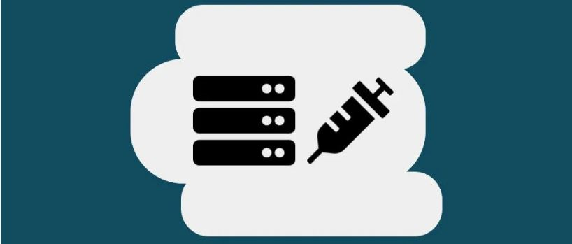
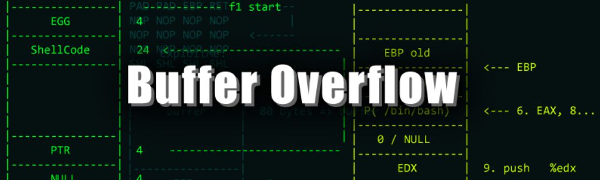

Common Vulnerabilities
SQL Injection (SQLi): A common vulnerability where attackers can manipulate SQL queries by injecting malicious SQL code through input fields in a web application. This can lead to unauthorized access, data leakage, or even full control over the database.
Cross-Site Scripting (XSS): A vulnerability that allows attackers to inject malicious scripts into web pages viewed by other users. These scripts can steal session cookies, hijack user accounts, or perform other malicious actions on behalf of the user.
Buffer Overflow: This occurs when a program writes more data to a buffer than it can handle, potentially overwriting adjacent memory. This can allow attackers to execute arbitrary code, often leading to system crashes or unauthorized access.
Privilege Escalation: A vulnerability that allows an attacker to gain higher privileges than they are supposed to have. This often happens when an attacker exploits a flaw in the operating system or application to execute actions that require admin or root privileges.

Command Injection: A vulnerability where an attacker can execute arbitrary commands on the server by injecting malicious code into input fields. This allows the attacker to control the server, often leading to full system compromise.
Understanding common vulnerabilities is crucial for the following reasons:
- Prevents Attacks: Helps implement measures to avoid exploitation.
- Improves Security: Reduces attack surface through better security practices.
- Faster Incident Response: Aids in quick detection and mitigation of attacks.
- Ensures Compliance: Meets industry security standards and regulations.
- Creates lasting memories with friends and family.
- Opens Career Opportunities: Essential for roles in ethical hacking and cybersecurity.
- Proactive Defense: Allows for early identification and mitigation of threats.